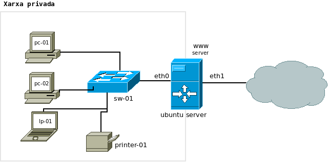

Unitat 2. Servei DNS
Práctica 2: Dominio local
3. Servidor de domini local
En la empresa Aplicaciones y Servicios (A&S) ha decidido instalar un servidor DNS en la red local, de esta forma será más fácil localizar los dispositivos de red y los equipos y acelerar la resolución de nombres DNS gracias a la funcionalidad de caché del servidor.
Red de trabajo DNS

1. Dado el esquema anterior completa primero la siguiente tabla asociando direcciones IP.
| Nombre de dominio | dirección IP |
| pc-01 |
.1 |
| pc-02 |
.. |
2. Una vez completada la tabla anterior crea el fichero de configuración de la zona y el de la zona inversa.
Llicenciat sota la Llicència Creative Commons Reconeixement CompartirIgual 4.0